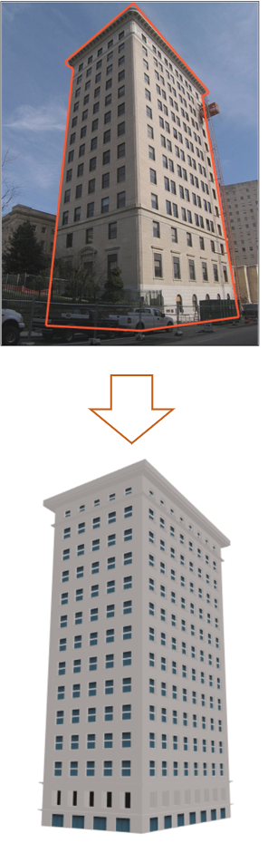
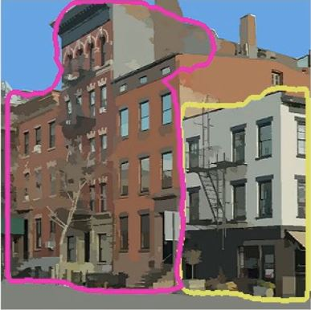
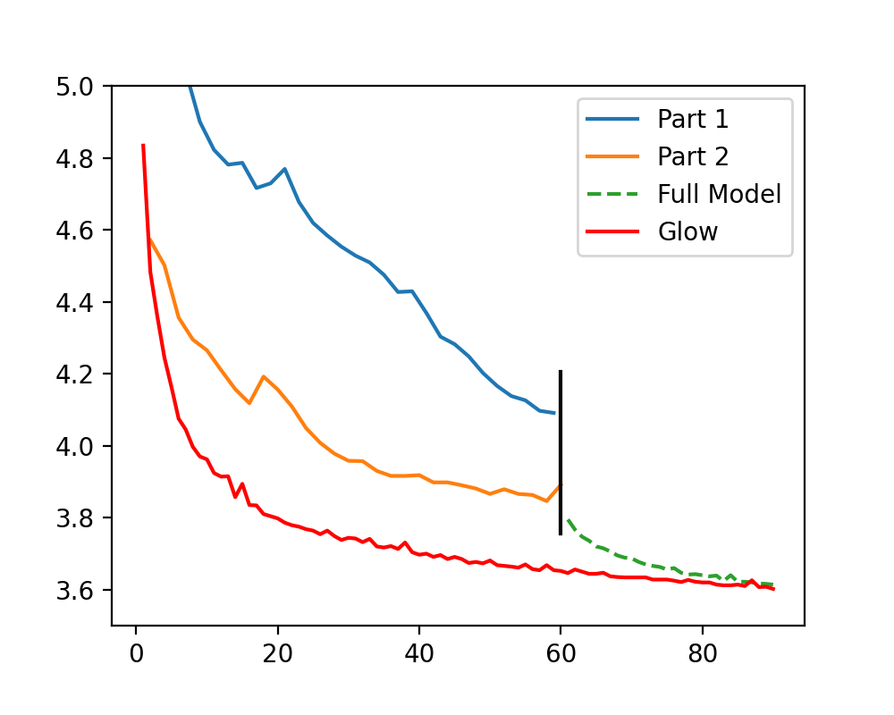
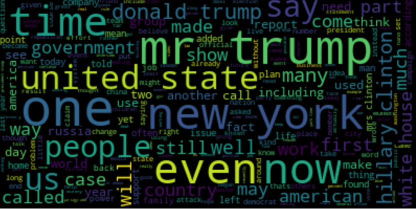
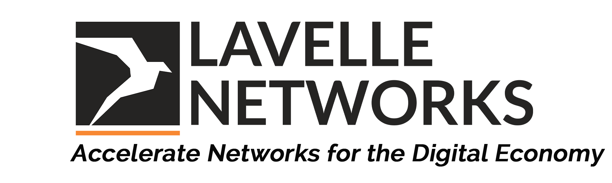

News
- [Oct ‘20] Poster Accepted at NeurIPS '20 Beyond BackPropagation Workshop
- [Aug ‘20] Attended Oxford Machine learning Summer School OxML '20
- [Jul ‘20] Presented and Volunteered at PEARC '20
- [Jul ‘20] Student Volunteer at ICML '20
- [Apr ‘20] Paper accepted at PEARC '20
Publications
- Learning Flows By Parts, NeurIPS ‘20 Workshop on Beyond BackPropagation: Novel
Ideas for Training Neural Architectures
[Paper]
[Poster]
[Video]
M. Bhatt
, and D. Inouye - Design and Deployment of Photo2Building: A Cloud-based Procedural Modeling Tool as a
Service, PEARC ‘20
[Preprint]
[Published]
[Code]
[Web-App]
M. Bhatt
, R. Kalyanam, G. Nishida, L. He, C.K. May, D. Niyogi and D.G. Aliaga
Research Experience


Silhouette Detection [In-Progress] [2020]
The main disadvantage of Photo2Building is that it requires a manually labelled contour as an input. This work focuses on performing an instance segmentation on street-view images to produce accurate 3D polylines representing the building boundary. Our network uses an unsupervised training approach. We compare results by training on well-known instance segmentation models such as Mask R-CNN, YOLACT and Mask Scoring R-CNN.

Learning Generative Normalizing Flows by Parts [In-Progress] [2020]
State-of-the-art flow based models introduce significant model complexity in deep
neural networks which induces long training times even on high-end GPUs. We focus on
optimizing such models in parts rather than full end-to-end backpropagation
to see if we can achieve similar performance even without end-to-end backpropagation.
Each model part is gradient-isolated to not exchange gradient information with other parts.
We evaluate our results along for training the state-of-the-art
Glow model via parts where we achieve
comparable accuracy in ~30% shorter time.
Course Projects

Predicting Remaining Useful Life (RUL) of a Li-Ion battery [Report]
The project involved estimating the remaining useful life (or capacity) of a Li-Ion battery after k number of charge and discharge cycles on a dataset provided by NASA. We evaluated various machine learning techniques to generate a user-dependent prediction. Relevance Vector Machine(RVM) with a certain degree of randomness was used to determine the capacity change

Fake News Detection [Report]
Classified news headlines during the U.S. Presidential Elections of 2016 into real and fake. A TF-IDF approach was used to generate lemmatized data. We evaluated our LSTM model against commonly used algorithms available from scikit-learn and achieved an accuracy of 96%

Gerstner Wave Simulation
Developed a 3D water simulation tool based on the Gerstner Wave simulation algorithm on the GPU. The code was developed using OpenGL and FreeGLUT
Work Experience
